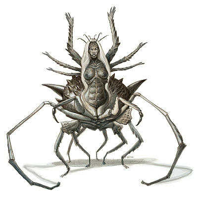
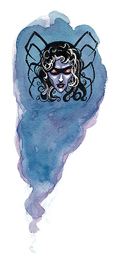

罗丝（Lolth）

黑暗精灵之女皇，蜘蛛神后，魔渊地之女皇
中等神力
邪徽：蛛身黯精灵

居住位面：Abyss
阵营：混乱邪恶
神职：黑暗精灵，蜘蛛，邪恶，黑暗
信徒：黑暗精灵
牧师阵营：混乱邪恶，混乱中立，中立邪恶
领域：混乱，毁灭，邪恶，诡术
偏好武器：长鞭
罗丝的外貌有时候是一位身材修长且美丽的黑暗精灵，有时是一只长有黑暗精灵的头的黑蜘蛛。她利用恐惧与赋予力量的承诺，与黑暗精灵们维持着一种联系，并对他们保持着一种野蛮，暴虐的统治。
事实上，正是罗丝首先在精灵之中传播邪恶的思想，并领导黑暗精灵们从传统的精灵社会中走出来，居住到地底的幽暗地域。黑暗精灵们嘲弄着地表居民们任何试图永远将他们禁制在底下的建议和想法，并随时准备扼杀它们。罗丝一直发誓要对柯瑞隆・拉瑞斯安和他的子民们复仇。
教义
罗丝永远支持任何一个黑暗精灵去算计或是杀死他的同族。她声称这是为了清楚黑暗精灵一族中的弱者，以使整个种族变得更强大，但她这个残忍而喜怒无常的暴君实际上却是以旁观别人受苦为乐。她也小心的制止着黑暗精灵社会中公开或是广泛的争斗。她绝不会饶恕大群黑暗精灵们进行的大规模的争斗，因为那对族群的力量是一种消耗和折损，但她也认可那些有着完美计划的，干净利落的，且瞬间占据了压倒性优势的大规模攻击行动。
罗丝期望她的子民精明，会算计，而且了周遭的危险与自身的优势。她认为情感，虚弱和爱都是完全没有用的东西。她期望着她的子民能够统治整个幽暗地域（在地表之下的过度），消灭所有孱弱的在族群征服力之内的敌人。她也期望他们能够最终能入侵并征服地表，不仅要统治，还要杀死全部柯瑞隆・拉瑞斯安及所有地表精灵。
神职人员与神殿
罗丝通过她的牧师来统治她的子民，罗丝的牧师只能由女性来担当，并且依靠血缘关系组成贵族家系。最年长的牧师统治着家族，年轻的牧师则按年龄拥有其地位，辅助族长。每个家族当然也包含非牧师成员，他们与牧师们依靠血缘或是婚姻关系保持着联系。牧师们以罗丝女神之名拥有着绝对统治权。她们是黑暗精灵社会的领袖，政治首脑，法官，以及死刑执行人。
几乎所有的黑暗精灵的家中都供奉着罗丝的神龛，至少也是一只蜘蛛或是罗丝精灵形象的塑像。大些的罗丝神殿一般都建成如卧地蜘蛛一般的形象。它们用来开会，献祭，也是高阶黑暗精灵们的娱乐场所。
罗丝
牧师20级/战士10级/法师10级
中体形外界生物（混乱，邪恶）
神格等级：15
生命骰：20d8+120（外界生物）加20d8+120（牧师）加10d10+60（战士）加10d4+60（法师）（820hp）
先攻调整值：+9
速度：60尺，攀爬30尺
防御等级：73（+9敏捷，+15神格等级，+28天生防御，+11偏转）
攻击加值：咬 +65近战或 +5幽冥混乱邪恶匕首 +67/+62/+57/+52近战或+5幽冥混乱邪恶长鞭 +70/+65/+60/+55 远程；或法术 +64近战接触或 +66远程接触
伤害加值：咬 1d6+12/19-20或 +5幽冥混乱邪恶匕首 1d4+12/19-20或 +5幽冥混乱邪恶长鞭 1d2+7；或者使用法术
占据/威胁范围：5尺*5尺/5尺
特殊攻击：领域神力，超凡神格能力，类法术能力，用毒，每日14次斥责不死生物
特性：黑暗精灵种族特性，神格免疫，伤害减免 50/+4，火元素伤害抗力 35，神术自发性施法，理解、交谈及阅读所有语言并直接于任何15里内的生命存在交谈，远程沟通，神祗国度，随意无误传送，随意位面旅行，魔宠（蜘蛛）， SR67，神力光环（1500尺，DC34）
豁免调整值：坚韧 +53，反射 +56，意志 +62
能力值：力量 24，敏捷 29，体质 22，智力 41，感知 41，魅力 32
技能调整值：炼金术 +69，估价 +50，平衡感 +28，唬骗 +83，攀爬 +43，专注 +84，手艺（编织） +93，交涉 +54，易容 +77，脱逃术 +52，收集信息 +49，躲藏 +81，威吓 +55，跳跃 +39，知识（奥术） +93，知识（历史） +66，知识（宗教） +89，知识（位面） +66，聆听 +70，潜行 +61，探知 +83，搜索 +75，察言观色 +68，侦察 +77，游泳 +45，翻滚 +54，技能检定掷骰自然结果总是取20
专长：盲斗，制造药水，格斗反射，制造魔杖，制造奇物，神恩力量，闪避，法术强效，异种武器擅长（长鞭），专家，法术延时，高级法术渗透，精通重击（咬），法术极效，机动，猛力攻击，法术瞬发，法术接触，抄录卷轴，法术熟稔，法术渗透，跳跃攻击，高级专家，武器娴熟（咬），武器专攻（咬），武器专攻（长鞭），武器专精（咬），武器专精（长鞭），旋风攻击
黑暗精灵种族特性：对魅惑类法术或效果意志检定具有+2种族加值，黑暗视觉，5尺内自动发现密门（直接进行搜索检定），对法术或类法术能力意志检定具有+2 加值，光线下目盲（突然暴露在光线下，将目盲1轮，在光线下活动时，攻击检定，豁免检定，以及其他所有检定结果受到-1减值）
神格免疫：属性伤害，属性吸取，酸，冷，即死效果，疾病，瓦解，电，能量吸取，心智影响效果，麻痹，毒，睡眠，震慑，变形，监禁，放逐。
超凡神格能力：改变形态，改变现实，改变大小，区域神力护盾，奥术熟稔，天神下凡，召唤生物（虫类），操控生物（黑暗精灵），神力冲击波，神力护盾，额外领域（毁灭），制造生物（蜘蛛），死亡之手，增强法术抗力，集体神力冲击波，变换形态（具体见下），生物交谈（虫类），奥术自法性施法
变换形态：此种力量允许罗丝在黑暗精灵和蜘蛛两种形态中自由变化。
用毒：被罗丝的蜘蛛形态身体咬中的生物将受到3d6点暂时力量伤害，除非他们通过了DC为41的坚韧检定。1分钟后，生物必须再做一次DC41的坚韧检定，以决定是否再接受3d6点暂时力量伤害。
蜘蛛网：在其蜘蛛形态时，罗丝每日可以生8次蜘蛛网。她可以将蜘蛛网伸展成网状，或者将其塑造成60平方英尺薄片状，如同一只变种蜘蛛（见怪物手册）所造出的网一般。只有通过DC46的脱逃术检定才能挣开罗丝的蜘蛛网，或通过DC53的力量检定才能破坏它。其每5尺的厚度拥有33点生命值。
此外，罗丝的蜘蛛网还带有毒性，生物（除罗丝自己和蜘蛛以外）碰触到蜘蛛网将受到1d6点的暂时力量伤害，除非通过坚韧检定（DC31）。在一分钟之后，中毒生物需要再做一次坚韧检定（DC31），未通过则再要接受1d6点暂时力量伤害。
领域神力：施展混乱领域法术时，施法者等级加1；施展邪恶领域法术时，施法者等级加1；每日15次威力打击（在一次攻击中获得+20的命中与伤害加值）
类法术能力：罗丝可以相当于施法者等级为26级使用混乱领域和邪恶领域类法术能力，以相当于施法者等级为25使用其他类法术能力。类法术能力的基本豁免DC为34+法术等级。Animate objects,change self,chaos hammer,circle of doom,cloak of chaos,sonfusion,contagion,create undead,desecrate,disintegrate,dispel good,dispel law,earthquakd,false vision,harm,implosion,inflict critical wounds,inflict light wounds,invisibility,magic circle against good,magic circle against law,mislead,nondetection,polymorph any object,protection from good,protection from law,screen,shatter,summon monster IX（仅限以混乱领域和邪恶领域法术施展），time stop,unholy aura,unholy blight,word of chaos
作为黑暗精灵，罗丝具有以施法者等级为60，每日使用一次dancing lights,darkness，和facrie fire的能力。
牧师每日神术：6/10/10/10/9/9/8/8/7/7；基础DC=25+法术等级
法师每日法术：4/8/8/7/6/5；基础DC=25+法术等级
其他神格能力
作为一个中等神力，罗丝在任何掷骰中自动取20，罗丝在攻击检定和豁免检定掷骰自然值出1时，并不视作必然失败，而是视作普通失败。她是不朽的。
感知：罗丝可以看见（使用通常视觉或黑暗视觉），听见，触摸和嗅到15哩的距离。作为一个标准动作，她能够感知到任何动物，她的信徒，圣迹，与她有关的物体和任何她的名字在一个小时内被说出的地点周围15哩内的一切。她能够立即将她的感知延伸到10个地方。她立即能够在2个地方阻止神格等级等于或者小于她的神的感知力量，时间最长可达15个小时。
神职感知：罗丝可以在事情的发生前15周，发生后15周，或发生时立刻感知到任何有关黑暗精灵一族安宁与幸福的事件。她也同样可以感知到任何黑暗精灵发动战争或使用暴力等活动。
自动动作：罗丝能够以一个自由动作使用其知识（奥术），知识（历史），知识（位面），或者知识（地理），等技能，只要该项任务的DC在25或者更低。罗丝也可以以一个自由动作使用她的躲藏技能。她每轮能够完成10个类似的自由动作。
创造魔法物品：罗丝能够创造任何魔法轻型或中型盔甲，简单武器与军用武器，以及任何能制造黑暗的魔法物品，比如darkness卷轴或wand fo deeper danrkness,任何可以做出预言的魔法物品，比如crystal ball，以及任何可以帮助使用者易容的物品，比如hat of disguise,只要物品的交易价格不超过200000GP。
化身
罗丝一般派遣她的化身试炼她的牧师，或是去恐吓她的敌人
罗丝的化身：如同罗丝的本体，但以下不同：神格等级为7，防御等级56（接触37，措手不及47）；攻击加值 +57近战（1d6+12/19-20 咬）+59/+54/+49/+44近战（1d4+12/19-20/*3，+5幽冥混乱邪恶匕首）或+62/+57/+52/+47远程（1d2+7，+5幽冥混乱邪恶长鞭）或者法术 +56近战接触或 +58远程接触；特性 伤害减免 42/+4，火元素伤害抗力 27，SR39，神力光环（700尺，DC26）；豁免调整值 坚韧 +45，意志 +54，意志 +48；所有技能调整值减8
用毒：如同罗丝本体，但豁免检定DC为33
蜘蛛网：如同罗丝本体，但逃脱术检定DC为39，破坏检定DC为45，每5尺厚生命为25点。蜘蛛网上毒的豁免DC为23
超凡神圣能力：改变形态，改变大小，召唤生物（虫类），操控生物（黑暗精灵），神力冲击波，神力护盾，额外领域（毁灭），死亡之手，增强法术抗力，变换形态（具体见下），生物交谈（虫类）
类法术能力：施法者等级为17；基本豁免DC为27+法术等级。